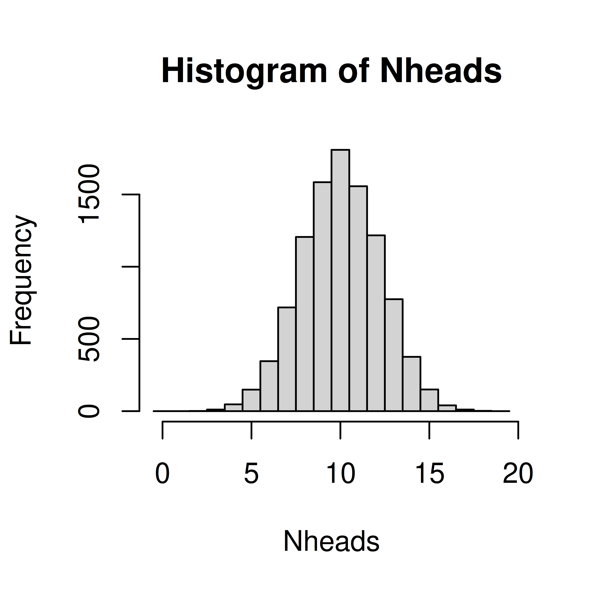

2 Discrete random variables
A categorical random variable has nominal or ordinal outcomes such as; {red, blue, green} or {tiny, small, average, large, huge}.
A discrete random number is usually counts and has a countable number of outcome values, such as {1,2,3,4,5,6}; {0,2,4,6,8} or all integers.
A discrete or categorical random variable can be described by its probability mass function (PMF).
The probability that the random variable, \(X\), takes the value \(x\) is denoted \(P(X=x) = p(x)\). Note that:
- \(0 \leq p(x) \leq 1\), a probability is always between 0 and 1.
- \(\sum p(x) = 1\), the sum over all possible outcomes is 1.
Example 2.1 The number of dots on a die
When rolling a die the there are six possible outcomes; 1, 2, 3, 4, 5 and 6, each of which have the same probability, if the die is fair. The outcome of one dice roll can be described by a random variable \(X\). The probability of a particular outcome \(x\) is denoted \(P(X=x)\) or \(p(x)\).
The probability mass function of a fair six-sided die can be summarized in a table;
| x | 1 | 2 | 3 | 4 | 5 | 6 |
| p(x) | 0.167 | 0.167 | 0.167 | 0.167 | 0.167 | 0.167 |
or in a barplot;

Figure 2.1: Probability mass function of a die.
Example 2.2 Nucleotide in a given site
The nucleotide at a given genomic site can be one of the four nucleotides; {A, C, T, G}. Unlike the sides on a die the four nucleotides are usually not equally likely. The nucleotide at the site can be described by a random variable, \(X\). The probability mass function can be summarized in a table or a bar plot.
| x | A | C | T | G |
| p(x) | 0.4 | 0.2 | 0.1 | 0.3 |
Figure 2.2: Probability mass function of a nucleotide site.
Example 2.3 The smoking status of a random mother
The random variable has two possible outcomes; non-smoker (0) and smoker (1). The probability of a random mother being a smoker is 0.39.
| non-smoker | smoker | |
|---|---|---|
| x | 0 | 1 |
| p(x) | 0.61 | 0.39 |
Example 2.4 CFU
The number of bacterial colonies on a plate is a random number.
Figure 2.3: Probability mass distribution of the number of bacterial colonies on an agar plate.
The probability mass function can be used to compute the probability of an event, such as the events
- get an even number when rolling a die - sum up the probabiliy for 2, 4, and 6, p(even)=p(2)+p(4)+p(6)=0.5
- less than 15 bacterial colonies on the agar plate - sum upp the probabilities $P(X<15) = _{k=0}^{14} p(k) = $ 0.01.
The cumulative distribution function (CDF) is defined for numeric discrete random variables as \(F(x) = P(X<=x)\).
2.1 Expected value and variance
For a numeric discrete random variable, the expected value of the random variable can be computed, when the probability mass function is know. The expected value is the mean of a random variable and is denoted \(E[X]\) or \(\mu\) and can be computed by summing up all possible outcome values weighted by their probability;
\[E[X] = \mu = \sum_{i=1}^N x_i p(x_i)\] For a uniform distribution, where every outcome has the same probability (in the urn model, every outcome is represented by one ball), the expected value can be computed as the sum of all outcome values divided by the total number of outcome values;
\[E[X] = \mu = \frac{1}{N}\sum_{i=1}^N x_i\] ### Linear transformations and combinations
\[E(aX) = a E(X)\]
\[E(X + Y) = E(X) + E(Y)\]
\[E[aX + bY] = aE[X] + bE[Y],\] where \(a\) and \(b\) are constants.
The variance is a measure of spread and the variance of a random variable is defined as the expected value of the squared difference of the random variable and its mean. The
\[var(X) = \sigma^2 = E[(X-\mu)^2] = \sum_{i=1}^n (x_i-\mu)^2 p(x_i)\] ### Linear transformations and combinations
\[var(aX) = a^2 var(X)\]
For independent random variables X and Y
\[var(aX + bY) = a^2var(X) + b^2var(Y)\]
2.2 Simulate distributions
Once the distribution is known, we can compute probabilities, such as \(P(X=x), P(X<x)\) and \(P(X \geq x)\). If the distribution is not known, simulation might be the solution.
Example 2.5 Simulate coin toss
In a single coin toss the probabity of heads is 0.5. In 20 coin tosses, what is the probability of at least 15 heads?
The outcome of a single coin toss is a random variable, \(X\) with two possible outcomes \(\{H, T\}\). We know that \(P(X=H) = 0.5\). The random variable of interest is the number of heads in 20 coin tosses, \(Y\). The probability that we need to compute is \(P(Y \geq 15)\).

Figure 2.4: A coin toss. Urn model with one black ball (heads) and one white ball (tails).
A single coin toss can be modelled by an urn with two balls. When a ball is drawn randomly from the urn, the probability to get the black ball (heads) is \(P(X=H) = 0.5\).
In R we can simulate random draws from an urn model using the function sample.
## A single coin toss
sample(c("H", "T"), size=1)## [1] "H"## Another coin toss
sample(c("H", "T"), size=1)## [1] "T"Every time you run sample a new coin toss is simulated.
If we want to simulate tossing 20 coins (or one coin 20 times) we can use the same urn model, if the ball is replaced after each draw.
The argument size tells the function how many balls we want to draw from the urn. To draw 20 balls from the urn, set size=20, remember to replace the ball after each draw!
## 20 independent coin tosses
(coins <- sample(c("H", "T"), size=20, replace=TRUE))## [1] "H" "T" "T" "H" "T" "T" "T" "H" "T" "H" "H" "T" "T" "H" "T" "T" "T" "T" "H" "T"How many heads did we get in the 20 random draws?
## How many heads?
sum(coins == "H")## [1] 7We can repeat this experiment (toss 20 coins and count the number of heads) several times to estimate the distribution of number of heads in 20 coin tosses.
To do the same thing several times we use the function replicate.
To simulate tossing 20 coins and counting the number of heads 10000 times, do the following;
Nheads <- replicate(10000, {
coins <- sample(c("H", "T"), size=20, replace=TRUE)
sum(coins == "H")
})Plot the distribution of the number of heads in a histogram.
hist(Nheads, breaks=0:20-0.5)
Now, let’s get back to the question; when tossing 20 coins, what is the probability of at least 15 heads?
\(P(X \geq 15)\)
Count how many times out of our 10000 experiments the number is 15 or greater
sum(Nheads >= 15)## [1] 194From this we conclude that
\(P(X \geq 15) =\) 194/10000 = 0.02
Resampling can also be used to compute other properties of a random variable, such as the expected variable.
The law of large numbers states that if the same experiment is performed many times the average of the result will be close to the expected value.
The coin flip is a common example in statistics, but many situations with two outcomes can be modeled using similar models. If we consider the outcome of interest succes (like heads in the coin example) and the alternative outcome failure we can for example model;
- Drug effect: A patient can respond to drug treatment (success) or not (failure)
- Side effect: After a treatment a patient might experience a side effect (success) or not (failure)
- Treatment or placebo: Randomly assign a study participant into treatment or placebo group
- Antibiotic resistance: A bacteria is either resistant to an antibiotic or not
The probability of success and failure can be equal, like in the coin example, but they don’t have to be equal. If the probability of a patient responding to a treatment is \(p=0.80\), we know that the probability of the patient not responding is \(1-p=0.20\), this can be modelled using an urn model with 4 black balls (cured) and 1 white ball (not cured).
2.3 Parametric discrete distributions
2.3.1 Bernoulli trial
A Bernoulli trial is a random experiment with two outcomes; success and failure. The probability of success, \(P(success) = p\), is constant. The probability of failure is \(P(failure) = 1-p\).
When coding it is convenient to code success as 1 and failure as 0.
The outcome of a Bernoulli trial is a discrete random variable, \(X\).
\[p(x) = \left\{ \begin{array}{ll} p & \mathrm{if}\,x=1\mathrm,\,success\\ 1-p & \mathrm{if}\,x=0\mathrm,\,failure \end{array} \right.\]
Using the definitions of expected value and variance it can be shown that;
\[E[X] = p\\ var(X) = p(1-p)\]
A Bernoulli trial can be simulated, as seen in previous section, using the function sample.
2.3.2 Binomial distribution
The number of successes in a series of independent and identical Bernoulli trials is a binomial random variable, \(X\).
\(X = \sum_{i=0}^n Z_i,\)
where all \(Z_i\) describe the outcome of independent and identical Bernoulli trials with probability \(p\) for success (\(P(Z_i=1) = p\)).
The probability mass function of \(X\) is called the binomial distribution. In short we use the notation;
\[X \sim Bin(n, p)\]
The probability mass function is
\[P(X=k) = {n \choose k} p^k (1-p)^{n-k}\] It can be shown that
\[E[X] = np\\ var(X) = np(1-p)\]
A binomial random variableis the number of successes when sampling \(n\) objects with replacement from an urn with objects of two types, of which the interesting type (success) has probability \(p\).
The probability mass function, \(P(X=k)\) can be computed using the R function dbinom and the cumulative distribution function \(P(X \leq k)\) can be computed using pbinom.
Examples fo binomial random variables;
- The number of patients responding to a treatment out of \(n\) patients in a study, if the probability of a patient responding to treatment is \(p\).
- The number of patients experiencing a side effect out of \(n\) patients in a study, if the probability of a side effect is \(p\).
- the number of mutations in a gene of length \(n\), if the mutations are independent and identically distributed and the probability of a mutation at every single position is \(p\).
2.3.3 Hypergeometric distribution
The hypergeometric distribution occurs when sampling \(n\) objects without replacement from an urn with \(N\) objects of two types, of which the interesting type has probability \(p\).
The probability mass function
\[P(X=k) = \frac{{Np\choose{k}}{{N-Np}\choose{n-k}}}{N\choose{n}}\]
can be computed in R using dhyper and the cumulative distribution function \(P(X \leq k)\) can be computed using phyper.
Examples of hypergeometric random variables;
- In a student group of 25 individuals, 10 are R beginners. If 5 individuals are randomly choosen to belong to group A, the number of R beginners in group A is a hypergeometric random variable.
- A drug company is producing 1000 pills per day, 5% have an amount of active substance below a threshold. In a random sample of 10 pill, how many contain to little active substance? The number of pills with to little active substance is a hypergeometric random variable.
- You investigate the differential expression of 10000 genes, 150 of these genes blong to the superinteresting pathway XXX. You run a black-box algorithm that report 80 differentially expressed (DE) genes. If the black-box algorithm choose DE genes at random, the number of DE genes that blong to pathway XXX is a hypergeometric random variable.
2.3.4 Poisson distribution
The Poisson distribution describe the number of times a rare event occurs in a large number of trials.
A rare disease has a very low probability for a single individual. The number of individuals in a large population that catch the disease in a certain time period can be modelled using the Poisson distribution.
The probability mass function;
\[P(X=k) = \frac{\mu}{k!}e^{-\mu},\] where \(\mu\) is the expected value, which is \(\mu = n \pi\), where \(n\) is the number of objects sampled from the population and \(\pi\) is the probability of a single object.
The Poisson distribution can approximate the binomial distribution if \(n\) is large (\(n>10\)) and \(\pi\) is small (\(\pi < 0.1\)).
Examples of Poisson random variables;
- A rare disease has a very low probability for a single individual. The number of individuals in a large population that catch the disease in a certain time period is a Poisson random variable.
- Number of reads aligned to a gene region
2.3.5 Distributions in R
Probability mass functions, \(P(X=x)\), for the binomial, hypergeometric and Poisson distributions can in R can be computed using functions dbinom, dhyper, and dpois, respectively.
Cumulative distribution functions, \(P(X \leq x)\) can be computed using pbinom, phyper and ppois.
Also, functions for computing an \(x\) such that \(P(X \leq x) = q\), where \(q\) is a probability of interest are available using qbinom, qhyper, and qpois.